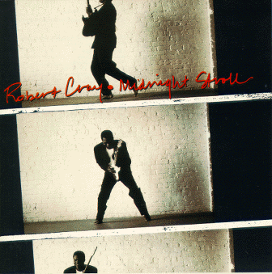

Midnight Stroll - Robert Cray

 Songs on the CD
Songs on the CD
- The Forcast Calls for Pain
- These Things
- My Problem
- Labor of Love
- Bouncin' Back
- Consequences
- The Things You Do To Me
- Walk Around Time
- Move A Mountain
- Holdin' Court -- Bonus Track
- Midnight Stroll
The Robert Cray Band
Robert Cray - vocals and guitar
Richard Cousins - base
Jimmy Pugh - keyboards
Kevin Hayes - drums and percussion
Tim Kaihatsu - guitar
The Memphis Horns
Wayne Jackson - trumpet and trombone
Andrew Love - tenor sax
Some Credits:
© 1990 PolyGram Records, Inc
New York New York
Producer - Dennis Walker
Direction - Mike Kappus, The Rosebud Agency
Album Design - Margery Greenspan
Photography - Jeff Katz
Back to my Cray page
Created: 12/4/95
By: rwhiffen
Mod: 2/7/99